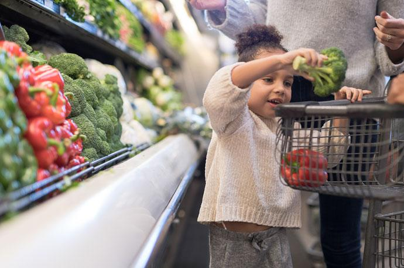

Healthy Start Vouchers enable parents/guardians to access healthy food free of charge.
Since April the vouchers are now worth £4.25. For beneficiaries this means the following:
∙ A £4.25 voucher provided each week of their pregnancy (from 10 weeks)
∙ 2 vouchers, worth a total of £8.50 each week for children from birth to 1 year
∙ A £4.25 voucher each week for children between 1 and 4 years old

Retailers
The Healthy Start website has now been relaunched and can be accessed via the same URL as before. Do check it out if you haven’t since the rebrand:
https://www.healthystart.nhs.uk/
It is also worth noting that there is an improved area for Health Professionals where data can be accessed on local uptake. If anyone is interested in viewing the latest figures for Leeds please see the link below:
https://www.healthystart.nhs.uk/healthcare-professionals/
Digitalisation
From June (this month) beneficiaries will begin receiving communication from Healthy Start about the digitalisation of the scheme. This communication will give details of when they will be able to apply online to the new scheme. Healthy Start are starting the roll out in London and have said they will be trying to give an indication in advance to local areas when this process will begin in our area.
I will keep you informed should I hear an update for Leeds, but worth noting in case any families do start hearing from Healthy Start.
We have been informed that by late summer paper applications will no longer be accepted and by October all beneficiaries will need to apply online.
Support for those without digital access
Healthy Start will have a telephone number with agents able to assist. For those where interpreters are needed, they will be able to utilise an interpreting service whilst they are on the call. Healthy Start are also very willing to consider translating their marketing/ communications into different languages. If anyone would like to feedback particular languages that would be useful for where you work do let me know and I can collate this together and submit.